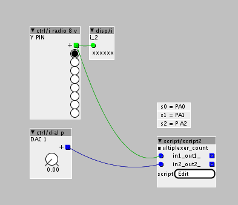

hi @rbrt ,
sorry, I'm not at home so I can't test the following code example.
You want to route the DAC1 output to any Y output pin of the 4051 like this:
axoloti Patch: 4051 DAC out PA4,5.axp (2.8 KB)

some parts of the code are from the "./out/analog.axo" object. An other solution will be to use a separate "./out/analog.axo" object and the script object only controls the Y pins of the 4051.
SCRIPT OBJECT CODE:
/*
marked comments with "*" are from axoloti "script" object
code isn't tested
*/
int i; // select y-input
void setup(void){
palSetPadMode(GPIOA,0,PAL_MODE_OUTPUT_PUSHPULL); // s0 Pin of 4051
palSetPadMode(GPIOA,1,PAL_MODE_OUTPUT_PUSHPULL); // S1 Pin of 4051
palSetPadMode(GPIOA,2,PAL_MODE_OUTPUT_PUSHPULL); // s2 Pin of 4051
palSetPadMode(GPIOA, 4, PAL_MODE_INPUT_ANALOG); // DAC OUTPUT PA4*
palSetPadMode(GPIOA, 5, PAL_MODE_INPUT_ANALOG); // DAC OUTPUT PA5*
RCC->APB1ENR |= 0x20000000; // *
DAC->CR |= 0x00030003; // *
i = 0;
}
void loop(void){
i = in1; //script object in1 controls 4051's Y output selection
if (i == 8) {
i = 0;
}
palWritePad(GPIOA,0,((i& 0x01) > 0)); // write s0
palWritePad(GPIOA,1,(((i>>1)& 0x01) > 0)); // write s1
palWritePad(GPIOA,2,(((i>>2)& 0x01) > 0)); // write s2
// select pin of the 4051 and route the DAC output value to it.
switch (i){
case 0:
DAC->DHR12R1 = in2>>15; // check "input 1" of the "script" object and control DAC PA4 *
/*DAC->DHR12R2 = in2>>15; // check "input 2" of the "script" object and control DAC PA5* */
break;
}
chThdSleepMilliseconds(5); // short delay
}
I hope this may help you.


{kind=link}
{kind=link}
{kind=link}